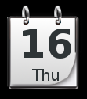

[click on any image to enlarge]
by Agustin J. Verdegal T (Agust)This article, E17: Create Your Own Custom Themes, originally appeared in PCLinuxOs Magazine, Volume 51, April 2011 (these links require an internet connection).
Much thanks to Agust for porting his PCLinuxOS theme A-LaNoche to Bodhi and for allowing us to post a modification of his article here. Before you start, you will need to install the A-LaNoche theme if it is not already installed:
sudo apt-get install -y bodhi-theme-lanoche
*Note: E17 themes are
installed by Bodhi at the location
/usr/share/enlightenment/data/themes/ but themes
can also be installed locally for the current user only at the
location ~/.e/e/themes. For an introduction on
using themes see the
Themes section.
- Introduction
- Part 1. Wallpaper
- Part 2: Images and Their Meaning
- Part 3. Theme Components
- Part 4. More Images
- Part 5. Compiling the Theme
- More Info
- Thanks
- Notes
Introduction
I will attempt to explain the simple way of creating an E17 theme, using the theme that I have created, called A-LaNoche. The first thing to do is to make a copy of the theme to your home directory, and then open the copy to start our work.
To open a theme file(.edj), we use the following command:
edje_decc file-name.edj
Personally, I divide the theme work into three parts:
the wallpaper in the .edj format,
images in the .png format,
and the .edc file.
Part 1. Wallpaper
So, let's get started. When you open the theme,
find the default.edc file, and edit it to modify
the wallpaper file.
The wallpaper, formatted as an .edj file, is more
realistic because it scales well in all resolutions. The wallpaper
consists of seven images, and they must look like they do here.
/*** DEFAULT WALLPAPER ***/Page 1
images {
image: "bodhi-logo.png" COMP;
image: "bodhi-logo-effect.png" COMP;
image: "bodhi-effect.png" COMP;
image: "topleft.png" COMP;
image: "topright.png" COMP;
image: "bottomleft.png" COMP;
image: "bottomright.png" COMP;
}
group { name: "e/desktop/background";
data { item: "style" "2";
}
parts {
part {
name: "base";
type: RECT;
description {
state: "default" 0.0;
min: 800 600;
color: 0 0 0 255;
}
}
part {
name: "effect";
description {
state: "default" 0.0;
min: 230 800;
max: 230 800;
align: 0.5 0.0;
rel1 {
to: "cause";
offset: -40 179;
}
rel2 {
to: "cause";
offset: 0 140;
}
image {
normal: "bodhi-logo-effect.png";
}
}
}
part {
name: "cause";
description {
state: "default" 0.0;
min: 400 400;
max: 400 400;
image {
normal: "bodhi-logo.png";
}
}
}
part {
name: "baseeffect";
description {
state: "default" 0.0;
min: 1680 1050;
image {
normal: "bodhi-effect.png";
}
}
}
part {
name: "topleft";
description {
state: "default" 0.0;
max: 150 150;
align: 0.0 0.0;
rel1 {
relative: 0.0 0.0;
offset: 0 -1;
}
rel2 {
relative: 1.0 1.0;
offset: 0 -1;
}
image {
normal: "topleft.png";
}
}
}
part {
name: "topright";
description {
state: "default" 0.0;
max: 150 150;
align: 1.0 0.0;
rel1 {
relative: 0.0 0.0;
offset: -0 -1;
}
rel2 {
relative: 1.0 1.0;
offset: -0 -1;
}
image {
normal: "topright.png";
}
}
}
part {
name: "bottomleft";
description {
state: "default" 0.0;
max: 150 150;
align: 0.0 1.0;
rel1 {
relative: 0.0 0.0;
offset: 0 0;
}
rel2 {
relative: 1.0 1.0;
offset: 0 0;
}
image {
normal: "bottomleft.png";
}
}
}
part {
name: "bottomright";
description {
state: "default" 0.0;
max: 150 150;
align: 1.0 1.0;
rel1 {
relative: 0.0 0.0;
offset: -0 0;
}
rel2 {
relative: 1.0 1.0;
offset: -0 0;
}
image {
normal: "bottomright.png";
}
}
}
}
}
Page 2
If, instead of using a wallpaper in the
.edj format, we want to use a simple wallpaper,
we need to modify the .edc file like this:
/*** DEFAULT WALLPAPER ***/
/** wallpaper original realizado por Agust gracias **/
images {
image: "grill_dark_tiny_pattern.png" COMP;
}
group {
name: "e/desktop/background";
max: 1680 1050;
parts {
part {
name: "background_image";
description {
state: "default" 0.0;
image {
normal: "grill_dark_tiny_pattern.png";
}
}
}
}
}
In this example, it is scaled to the resolution of
1680 x 1050. Rename it to grill_dark_tiny_pattern.png
and keep it in the theme folder that we created.
In this way, we have our wallpaper for the theme.
Part 2: Images and Their Meaning
As we can see in the screen capture, we have the images in .png
format of the example that we are creating. I will try to explain
the most important ones.

The first three images are about_bot.png, about_mid.png and about_top.png.
They are the images that create the bottom of the image about-theme,
available in the menu Enlightenment > About. Close to the Arrows
are the images that are indicated in the subject above, down, right
or left.
The images that follow belong to the computer's battery icon as it appears on your screen in various states of change.

Now comes one of the most important parts of the example,
the image base_bg.png. It is the one that we will use
for the main menu. As you can see, the image will be in a very dark
color. Therefore, we will have to change the color of the menu
letters to a clear or white color, so that the letters contrast with
the black color. We will edit the file default.edc and change the
color of the letters in this manner.
color_class {
name: "menu_item";
color: 221 221 221 255;
color3: 0 0 0 64;
}
color_class {
name: "menu_item_active";
color: 255 255 255 255;
color3: 0 0 0 14;

As you can see, I have used white, but you can use the color you want.

bd_bottom.png is the image for the bottom flange of
the window and bd_top.png is for the top flange of the
window. bd_title_bg.png is going to use the edge of the
window when it is active. I've made it using a transparent glass effect.
bd_bottom images are those used when windows are
minimized or expanded.

Here we see the icons to be used for bluetooth. We can use what
we like as long as we respect the sizes, to avoid having to modify the
default.edc. bnw.png image is the
image which shows the information on the theme, who has contributed,
credits etc…
{kind=link}
The tabs are going to use the images bt-base.png,
base2.png and dis_base.png.
bt_sm_base1.png tab is the image used when we click a
button. bt_sm_base2.png is used when the slider is
selected.
Here is our example:
{kind=link}
Part 3. Theme Components
In the following image we see one of the components which is most
important to creating the theme. Along with the file .edc,
that component is build.sh. The script is.
#!/bin/sh
edje_cc $@ -id . -fd . default.edc -o default.edj
Or, [A-Noche.edj], which is the script that
created the theme we are examining. Along with the build , the theme
consists of 10 images and working windows.
{kind=link}
 I designed the seconds indicator as only a green point without hands,
such as those used for minutes and hours.
I designed the seconds indicator as only a green point without hands,
such as those used for minutes and hours.
 We see more images contained in the theme, but the most important
file is
We see more images contained in the theme, but the most important
file is default.edc, the file that contains all of our
theme elements, and from which we can customize almost anything.
 An example is the element calendar. I have added it to the theme and modified the file
default.edc to use the calendar that
you are seeing (E17_calendar.png). It is necessary to
add or to modify it this way.
/*** MOD: CALENDAR ***/
images {
image: "E17_calendar.png" COMP;
}
fonts {
font: "VeraMono.ttf" "VeraMono";
font: "VeraBd.ttf" "VeraBold";
}
group {
name: "modules/calendar/main";
parts {
part {
name: "calendar";
description {
state: "default" 0.0;
aspect: 1.0 1.0;
aspect_preference: BOTH;
rel1 {
relative: 0.0 0.0;
}
rel2 {
relative: 1.0 1.0;
}
image {
normal: "E17_calendar.png";
}
}
}
part {
name: "monthday";
type: TEXT;
mouse_events: 0;
description {
state: "default" 0.0;
rel1 {
relative: 0.1 0.2;
offset: 0 0;
to: "calendar";
}
rel2 {
relative: 1.0 0.7;
offset: -1 -1;
to: "calendar";
}
color: 46 52 54 255;
color_class: "module_label";
text {
text: "??";
font: "VeraBold";
size: 13;
min: 1 1;
fit: 1 1;
text_class: "module_large";
}
}
}
part {
name: "weekday";
type: TEXT;
mouse_events: 0;
description {
state: "default" 0.0;
rel1 {
relative: 0.4 0.7;
offset: 0 0;
to: "calendar";
}
rel2 {
relative: 0.7 0.9;
offset: -1 -1;
to: "calendar";
}
color: 46 52 54 255;
color_class: "module_label";
text {
text: "??";
font: "VeraMono";
size: 9;
min: 1 1;
fit: 1 1;
text_class: "module_large";
}
}
}
}
}
As part of the modification of this theme, we also must add the image
E17_calendar.png, and the sources VeraBd.ttf
and VeraMono.ttf. Then we have our calendar. Also, we can
see the image dia_grad.png, which is the base of the theme.
Now we will see the images that the theme uses for entrance (login
manager), which are exq-bglight.png, exq-dot-glow.png,
exq-dot.png and exq-logo.png. We also see* the
image grill_dark_tiny_pattern.png
which I previously explained, is the image normally used for the
wallpaper. But if you created a wallpaper like shown in Part 1 you will
not need to use it.

The following images are the icons of the theme. You can always exchange them for the ones you like most, using the same sizes and names.
{kind=link}
Now we will look at the images of the logo in the theme, as well as the highlight color of the items selected in the main menu.
The image used for the theme as a logo default is
logo_white_128.png. When we select an item in the main
menu, the first item in the sub-menu will change to
logo_black_128.png. It would be this way:
{kind=link}
Part 4. More Images
In this section of images, we see the icon that we are going to
use as the volume control. Also, we see the images for the pager. They
are transparent with a rim of dark color.

Now the transition effects. Here we see the images for the cursor and cursor effects. These effects can look very nice.
The power icon pertains to the battery. When visible, it indicates that the battery is charging. It will disappear when the battery is totally charged.

Now we will look at the color of the shelf that is going to be used in this theme. Note that the predetermined color of the shelf is the same color we have used for the main menu. E17 gives us the options to change the color of the shelf to one more transparent. (That is what I used.) In this example we see that I have put the color black as an option for the color of the shelf.
Looking further, you will see the slider and slider_clicked images.
I have added a brightness effect so that when we use the slider, it has
a light effect. The icons tacho_bg and
tacho_dial_xx belong to Cpufreq E17 module.

Finishing up, we see the images used for the temperature icon. The vgrad images are used in the theme for the E17 module everything. Notice also that the ttf fonts used are the same ones used by the calendar.
{kind=link}
Part 5. Compiling the Theme
When our theme is ready, we only need to compile it. If you use this theme as your base, compiling it is very easy.
Double click on build.sh.
If everything has gone well, an .edj theme file
will be created. In this case, the resulting file will be
A-Noche.edj. Keep in mind that if there is a
creation error, it is because there is some error in the theme's
contents.
There are some themes that use enlightenment_remote. For those themes, it is necessary to compile them differently. Open a terminal, and enter the following.
./build.sh
./build.sh && enlightenment_remote -restart
More Info
For more in-depth information on edc files and creating themes, in general, please visit the Edje Data Collection Reference page. It can only further enhance your theme-creating abilities. An internet connection is needed to access the link.
Thanks
I wish to give thanks to all those who have donated their time teaching me what I know. They are:
- Toma (Tom Haste) , Team Enlightenment.
- Rui Pais , Team Enlightenment and Leader OzO.
- Aubrey , Artist OzO.
- Luca di Marini (Darkmaster) , Artist and Leader Open GE.
- and Roxville Prince AMD (Team Elive) on which I have based many of my works.
I am also thankful to Parnote for his interest and for helping me to write this article. I hope that it serves him as an aid to creating themes, but mainly in understanding the operation of E. This is dedicated especially to Texstar, and to Smurfslover for his great work and the interest he has demonstrated in Enlightenment.
Notes
Bodhi Editor Notes: Special thanks to Agust for creating a Bodhi adaptation of his A-LaNoche theme and to both Agust and PCLinuxOS for allowing us to use and adapt the original article to Bodhi's A-LaNoche theme.
PCLinuxOS Editor's Note: Special thanks to Agust for sharing his technique for creating E17 Themes. Extra special thanks go out to my mother-in-law, Lupe Warnock, for translating Agust's instructions and tutorial from Spanish to English for The PCLinuxOS Magazine.